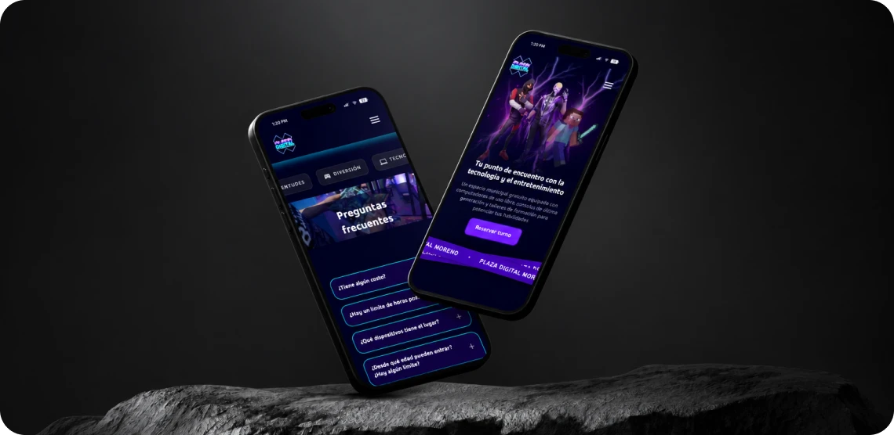
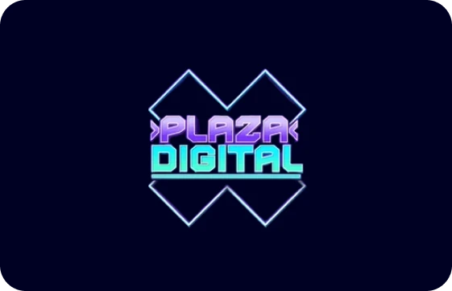
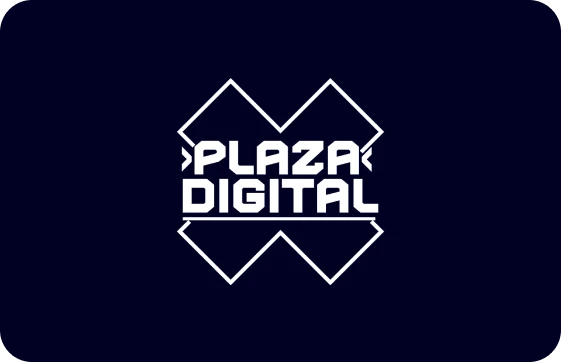
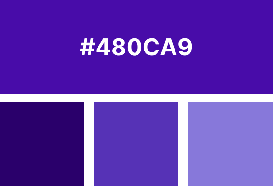
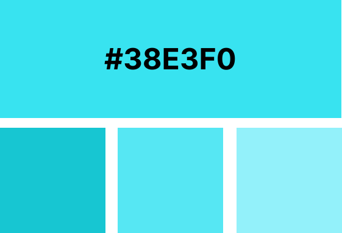
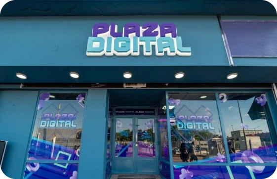
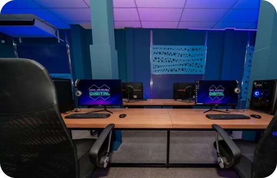

Volver al inicio
Plaza Digital
Desarrollamos una app de turnos y un panel de administración
Desde la web, los usuarios pueden consultar y solicitar turnos para utilizar equipos como PlayStation y PC Gamer. Desde el panel administrativo, el equipo puede gestionar turnos, dispositivos, horarios, reportes y distintos procesos internos desde un solo lugar.
Sitio web: www.plazadigital.moreno.gob.ar




Nuestra solución para Plaza Digital
La solución permitió digitalizar la gestión de Plaza Digital, reducir tareas manuales y centralizar la administración del servicio en una plataforma más ordenada y eficiente.

